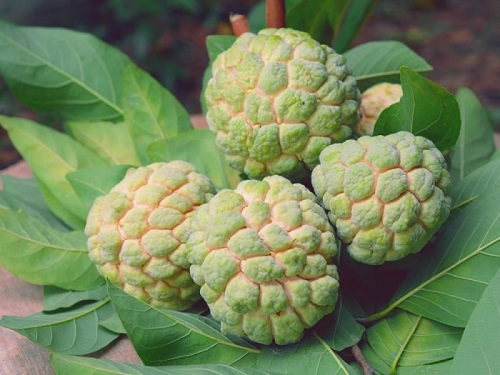

Custard apple is a common name for a fruit, and the tree which bears it, Annona reticulata. The fruits vary in shape, heart-shaped, spherical, oblong or irregular. The size ranges from 7 to 12 cm (2.8 to 4.7 in), depending on the cultivar. When ripe, the fruit is brown or yellowish, with red highlights and a varying degree of reticulation, depending again on the variety. The flesh varies from juicy and very aromatic to hard with an astringent taste. The flavor is sweet and pleasant, akin to the taste of 'traditional' custard.
